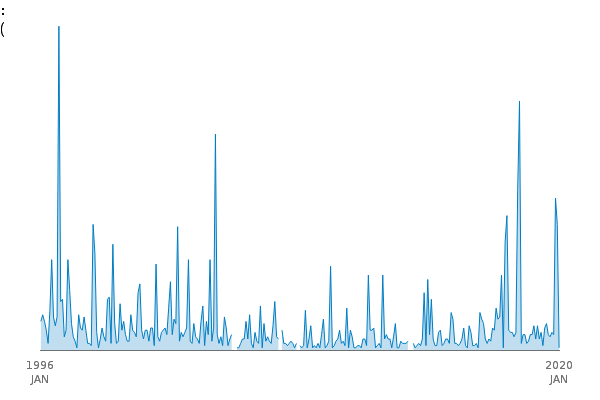

OUR COMMUNITY
Provides latest sources and Information

-
Hal Finney
The receiver of the first Bitcoin
-
Satoshi Nakamoto
Creater and richest holder
-
Barry Silbert
Top Bitcoin Investor
Dogecoin is a cryptocurrency created by software engineers Billy Markus and Jackson Palmer, who decided to create a payment system as a joke, making fun of the wild speculation in cryptocurrencies at the time.Despite its satirical nature, some consider it a legitimate investment prospect. Dogecoin features the face of the Shiba Inu dog from the "Doge" meme as its logo and namesake.It was introduced on December 6, 2013, and quickly developed its own online community, reaching a market capitalization of US$85,314,347,523 on May 5, 2021.
Originally formed as a joke, Dogecoin was created by IBM software engineer Billy Markus and Adobe software engineer Jackson Palmer. They wanted to create a peer-to-peer digital currency that could reach a broader demographic than Bitcoin. In addition, they wanted to distance it from the controversial history of other coins.Dogecoin was officially launched on December 6, 2013, and within the first 30 days there were over a million visitors to Dogecoin.com. Palmer is credited with making the idea a reality. At the time, he was a member of the Adobe Systems marketing department in Sydney. Palmer had purchased the domain Dogecoin.com and added a splash screen, which featured the coin's logo and scattered Comic Sans text. Markus reached out to Palmer after seeing the site, and started efforts to develop the currency. Markus had designed Dogecoin's protocol based on existing cryptocurrencies Luckycoin and Litecoin, which use scrypt technology in their proof-of-work algorithm.The use of scrypt means that miners cannot use SHA-256 bitcoin mining equipment, and instead must use dedicated FPGA and ASIC devices for mining which are known to be more complex to produce. On December 19, 2013, Dogecoin jumped nearly 300 percent in value in 72 hours, rising from US$0.00026 to $0.00095,[18] with a volume of billions of Dogecoins per day. This growth occurred during a time when bitcoin and many other cryptocurrencies were reeling from China's decision to forbid Chinese banks from investing into the bitcoin economy. Three days later, Dogecoin experienced its first major crash by dropping by 80% due to this event and to large mining pools exploiting the small amount of computing power required at the time to mine Dogecoin. On December 25, 2013, the first major theft of Dogecoin occurred when millions of coins were stolen during a hack on the online cryptocurrency wallet platform Dogewallet.The hacker gained access to the platform's filesystem and modified its send/receive page to send any and all coins to a static address.This hacking incident spiked tweets about Dogecoin, making it the most mentioned altcoin on Twitter at the time, although it was in reference to a negative event. To help those who lost funds on Dogewallet after its breach, the Dogecoin community started an initiative named "SaveDogemas" to help donate coins to those who had them stolen. Approximately one month later, enough money was donated to cover all of the coins that were stolen.On May 9, 2021, SpaceX announced a rideshare mission to the Moon completely funded by Dogecoin, thus becoming the first space mission funded by a cryptocurrency. Elon Musk confirmed this news via Twitter. DOGE-1 will be a minor 40kg rideshare payload on Intuitive Machines' IM-1 mission in Q1 2022.
Technology and DeFI
DeFi or Decentralized Finance is a form of finance that does not rely on middle-men such as brokerages, exchanges, or banks to offer financial instruments. This is accomplished using "smart contracts" which are automated enforceable agreements that do not need intermediaries like a bank or lawyer, but use online blockchain technology instead. While Dogecoin cannot interact with smart contracts directly given that it operates on its own chain, the coins can be "wrapped" so that they can be locked into a state that is interoperable with a contract until it is later released. The Ren Project has enabled Dogecoin (renDOGE) to be used on the ethereum blockchain and access the DeFI network (most DeFI coins use the ethereum blockchain network). DeFi linked coins use decentralized applications to transact and trade on decentralized exchanges (DExs). An example of a Dexs is Uniswap; these are entirely peer-to-peer exchanges, without any company or other institution providing the platform.
The receiver of the first Bitcoin
Creater and richest holder
Top Bitcoin Investor